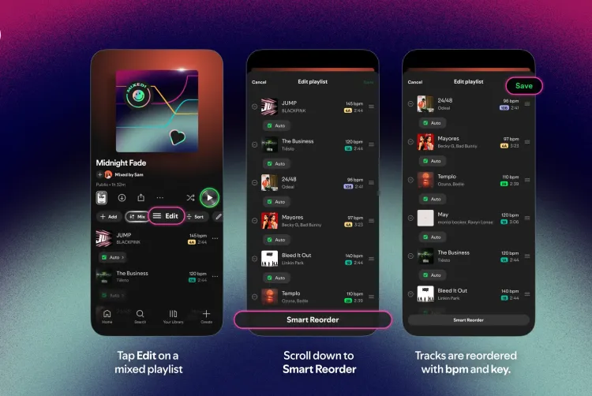

Spotify’s Smart Reorder treats your playlists like a DJ set Reporter: Jane Jost
Premium users can now automatically sort Mixed playlists based on each track’s BPM and key.
Spotify’s “Mix” feature now has an option called “Smart Reorder” that can automatically sort users’ playlists based on beats per minute (BPM) and key, organizing songs for the best flow from one track to the next. It builds on the existing Mix feature in Spotify and, along with transitions between songs, which were introduced in August, users can now effectively have an automated DJ mix their Spotify playlists for them.
The “Smart Reorder” option, announced on Wednesday, is available now in the Spotify app for Premium subscribers. To try it out, open a playlist and tap the “Mix” button then “Edit.” The “Smart Reorder” button should be at the bottom of the editing screen. Be careful before saving, though — using Smart Reorder will override any custom sorting on the playlist you’re editing.

Image: Spotify
Smart Reorder works particularly well with new Mixed playlists. For example, if you’re not accustomed to playlist customization and find reordering a hassle, Smart Reorder takes the pressure off. But it also works well for readjusting your existing, manually reordered playlists. For example, it’s easy to lose inspiration when reordering a large playlist, and using Smart Reorder can offer transitions you might not have chosen.
Better still, Smart Reorder won’t edit your custom transitions. Instead, it provides the option to keep these tracks in their current order, only rearranging songs with ‘auto’ transitions. Smart Reorder can also completely overhaul your Mixed playlist with a new song order if you wish. This can be helpful if you’ve gotten bored with your current playlist but don’t want to spend time rearranging your songs from scratch.

DJ’s will also benefit from smooth transitions between songs